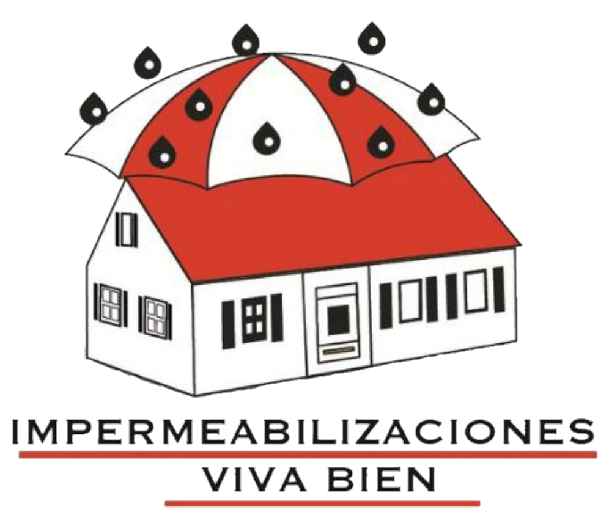

¿Quiénes somos?
En IMPERMEABILIZACIONES VIVA BIEN, nos enorgullecemos de ser líderes en soluciones de impermeabilización en México. Desde nuestros humildes comienzos, hemos crecido para convertirnos en una empresa confiable y de renombre que atiende a clientes en toda la República Mexicana.
Nuestra Misión
Nuestra misión es proteger su inversión y su hogar, brindando soluciones de impermeabilización de alta calidad que aseguran la durabilidad y la resistencia de sus estructuras ante las inclemencias del clima. Estamos comprometidos con ofrecer productos y servicios de vanguardia para garantizar la satisfacción de nuestros clientes.
Nuestra Experiencia
Con más de 10 años de experiencia en la industria de la impermeabilización, hemos perfeccionado nuestro arte y hemos desarrollado técnicas avanzadas que nos permiten ofrecer soluciones efectivas y asequibles para una amplia variedad de proyectos.
Nuestros Servicios
- Impermeabilización de techos
- Impermeabilización de cimientos
- Impermeabilización de muros
- Impermeabilización de estructuras subterráneas
- Mantenimiento preventivo y reparación de impermeabilización
- Asesoría personalizada
Nuestro Compromiso con la Calidad
Nos enorgullece utilizar los materiales más avanzados y las técnicas más efectivas en cada proyecto que emprendemos. Trabajamos con un equipo de profesionales altamente calificados que están comprometidos con la excelencia en el servicio y la satisfacción del cliente.
Atendiendo a Toda la República
Con una presencia en todo México, IMPERMEABILIZACIONES VIVA BIEN está listo para servir a clientes en todo el país. No importa dónde se encuentre, estamos aquí para proporcionar soluciones de impermeabilización confiables y duraderas.
Descripción Del Sistema Completo De 6 Capas:
Descripción de trabajo sistema completo de impermeabilización:
A) Limpieza de la zona a trabajar (losa del edificio) barrer perfectamente la zona.
B) Sellado de losa (sellador tipo VIVA BIEN).
C) Pegado de membrana (membrana de doble refuerzo poliéster y algodón) simultáneamente con pegamento tipo VIVA BIEN.
D) Segunda mano de pegamento tipo VIVA BIEN sobre la membrana de doble refuerzo ya trabajada.
F) Primer mano de impermeabilizante reflectivo ahulado tipo rojo terracota VIVA BIEN.
G) Segunda mano de impermeabilizante reflectivo ahulado tipo rojo terracota tipo VIVA BIEN.
Elaborado con materiales de la mejor calidad del mercado base acrílico por nosotros mismos para su mejor elaboración del mismo.
| 1ER Capa | Sellador |
| 2DA Capa | Pegamento tipo VIVA BIEN (Primera mano) |
| 3ER Capa | Pegamento tipo VIVA BIEN (Segunda mano)) |
| 4TA Capa | Membrana de doble refuerzo tipo VIVA BIEN |
| 5TA Capa | Impermeabilizante reflectivo color rojo terracota tipo VIVA BIEN (Primera mano) |
| 6TA Capa | Impermeabilizante reflectivo color rojo terracota tipo VIVA BIEN (Segunda mano) |
Contacto
Estamos disponibles para responder a sus consultas y proporcionarle una cotización personalizada para sus necesidades de impermeabilización. Comuníquese con nosotros hoy mismo para descubrir cómo podemos proteger y fortalecer sus estructuras.
En IMPERMEABILIZACIONES VIVA BIEN, la integridad y la calidad son nuestros sellos distintivos. Confíe en nosotros para mantener sus espacios secos, seguros y protegidos del clima. ¡Es un honor servir a nuestros clientes en todo México!